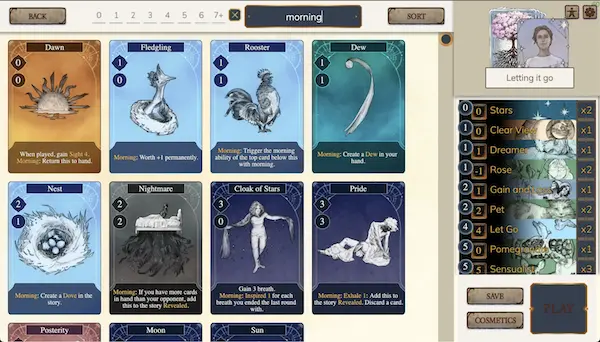
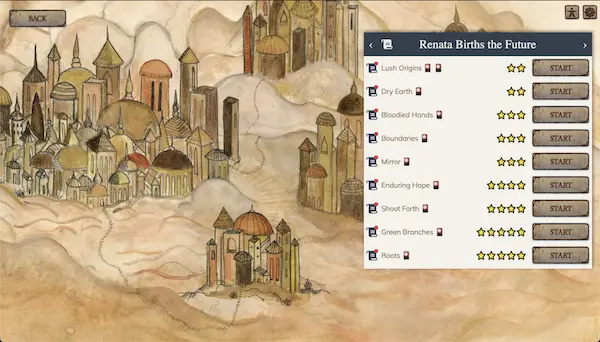
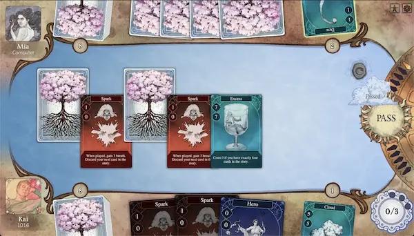

Called to the mysterious City, travelers craft decks of 15 cards, each
embodying their most cherished themes and profound lessons.
Each match is a race to claim 5 rounds. During the day, players weave
their cards into a shared story by spending breath. As night falls,
these stories resolve, and the crowd awards the player with the
highest points as victor.
From mastering the single-player Journey to testing your skills
against others online, Celestial reimagines card games by fusing
strategic depth with personal expression.
Join our Discord community to connect with other players, share strategies, and get the latest news on Celestial Decks!
Dream up and refine the decks you make from a full collection of over 100 unique cards
Complete interesting challenges to unlock cards as you learn about travelers called to the City
Play against friends and rivals to become the very best, earning rewards along the way
